Why is this important?
Well. Rib injuries really hurt. It's not fun to not be able to breathe without wincing in pain. These injuries
disrupt daily life, disturb your sleep, and keep you out of the boat and out of the gym for a long time. I'm sure any of the
people who suffered a rib injury last year would agree. You have the opportunity to prevent this type of injury now. So just do it.
How do rib injuries happen?
1. Twisting/Improper technique
Rib strain can easily happen from not "rowing the right way". In addition to doing the exercises below, make sure you're
not twisting your torso or leaning, especially at the finish. Sometimes you don't notice you're doing it because you're
trying to keep the boat set, so watch video of yourself or ask the rower behind you or a coach to make sure you are finishing
correctly.
2. Impact
Though less likely on a women's squad, rib fractures can because by the repetitive impact on the ribs every stroke at the finsh.
So be sure you're finishing all the way to the body, but not too hard. Ensuring that your feet and oarlock are postitioned
correctly for your height will help to ensure the oar is meeting your body at the right height.
3. Fatigue
Finally, of course there is definitely the possibility of an overuse injury. Not taking care of yourself and overtraining can
lead to all sorts of overuse injuries, including ones related to ribs and the surrounding muscles. Train smart.
The Flexibility & Strength sections below were taken from documentation from Princeton Rowing. Perform these exercises 3 times per week.


-
Seated in a chair, reach with opposite hand of
"trapezius"ù muscle being stretched and place on
head. The hand of the side being stretched should
be placed underneath the chair for leverage.
Gently pull head to side. Stretch should be felt
through your neck and trapezius muscle. Change
position of head (forward or back) to feel different
muscle fibers. Hold for 20 sec. Repeat 3-5 times.
Switch side for balance.
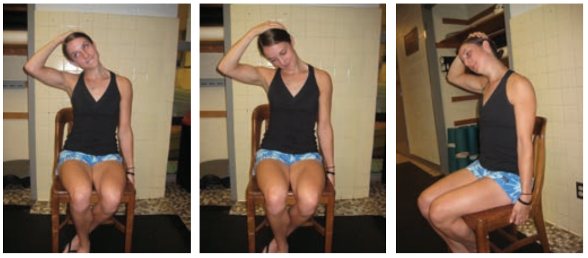
-
Sidelying, rest your chin on the
shoulder that is being stretched.
Make sure shoulder angle and arm
are at 90 degrees. Opposite hand
pushes arm being stretched, down
towards the table. Stretch should be
felt in the back of the shoulder. This is
more of a dynamic stretch, therefore
only needs to be held for 2-3 sec
when end range is achieved. Switch
side for balance. Complete 15 times.
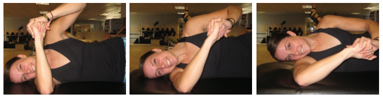
-
Stand on one side of a wall and place
the arm that is being stretched across
your body. Grip onto the side of the
wall, and look slightly away towards the
side being stretched. Stretch should be
felt behind the shoulder and scapula
(shoulder blade). Hold for 20-30 sec.
Repeat 3-5 times. Switch side for
balance.
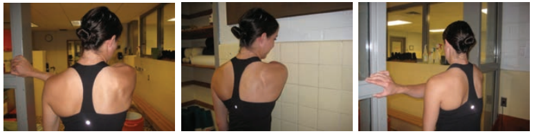
-
Stand on one side of a wall with hand/forearm resting on the wall.
Make sure to keep your shoulders down (keep shoulders away from
ear). Step with the opposite foot forward, stretch should be felt on the
one side of the pectoral group muscle. Hold for 30 seconds. Repeat
3-5 times. Switch side for balance.
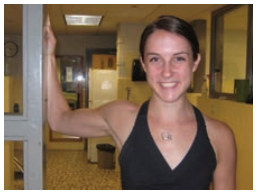
-
Lie on the foam roller (with the roller along your spine), and open up
your chest by placing arms at your side making sure they are at 90
degrees. For the static stretch, hold position for up to 1-2 min. For
the dynamic stretch, raise arms above your head trying to keep arms
parallel with the ground and return to 90 degrees. Repeat 10-15 times.
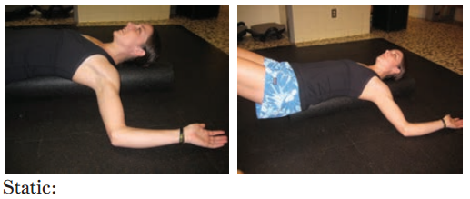
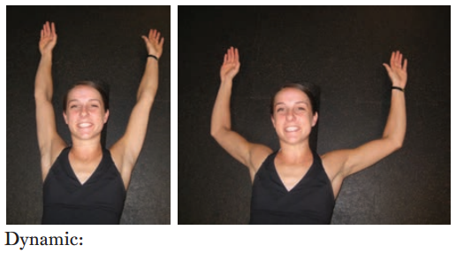
-
In a seated position, place your back and
shoulder blades flat against the wall. Make sure
not to arch your lower back in order for shoulder
blades to come in contact with the wall. Tightening
your core will help flatten your lower back as well.
Alternate lifting right or left arm above your head,
followed by the opposite arm, while keeping your
shoulder blades against wall. Repeat 10-15 times
each arm.
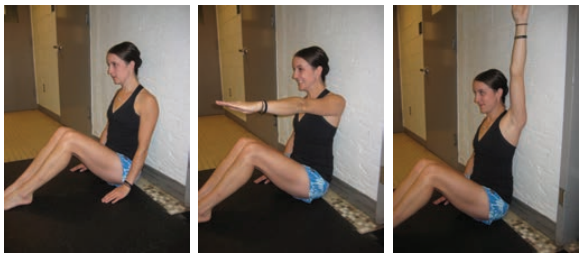
-
In a seated position, place your back and
shoulder blades flat against the wall with your
arms/shoulders at 90 degrees. Slide your arms
up the wall until arms have straightened while
keeping your shoulder blades in contact with the
wall the entire time. Return to the 90/90 degree
position, and repeat 10-15 times.
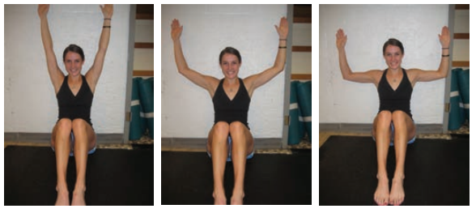
-
Seated on Physioball, make sure you are sitting upright and core
is engaged for proper alignment. Place the hand of the side being
stretched on your head and slightly lean away. Stretch should be felt
along rib cage and latissimus muscle. Hold for 20-30 sec. Repeat 3-5
times. Switch side for balance.
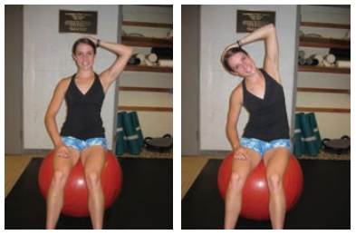
-
While standing, face the Physioball and place
elbow with arm bent on the ball. Allow the ball to
guide you into the stretch. Stretch should be felt
in Latissimus muscle. Another option is placing
elbow on the Physioball while standing and facing
sideways. Lean into the ball to feel a deeper
stretch. Hold for 20-30 sec. Repeat 3-5 times.
Switch side for balance.
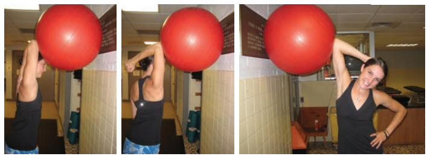
-
In a standing position, place both hands on the Physioball. Lean into
the Physioball with your arms, and allow it to guide you forward. Once
you get to the end range, hold for 2-3sec, and repeat 10-15 times.
Stretch should be felt in your latissiumus muscles.
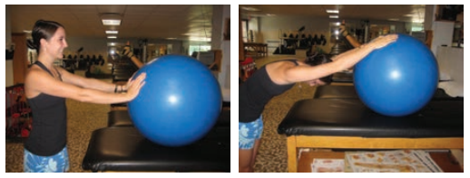
-
Start lying face down, with elbows bent and hands on table. Push your
upper body into an extended position and hold for 2-3 sec. Be sure to
keep the front of your hip bones in contact with the table during the
entire movement. If your hip bones have come off the table, this means
you are extending too far. Repeat 10 - 15 times.
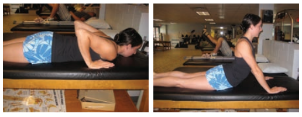
-
Start by siting in a chair in an upright position working on good posture.
The side of the arm doing the exercise should be placed on the table.
Slide your arm forward by using the muscles near your shoulder blade.
The shoulder blade should open which is called “scapular protraction”.
This should be followed by sliding your arm back, as if you would be
squeezing your shoulder blades together, but isolating one side at a
time. This is called "scapular retraction"ù. Repeat 2 -3 sets of 15-20
times on each side.
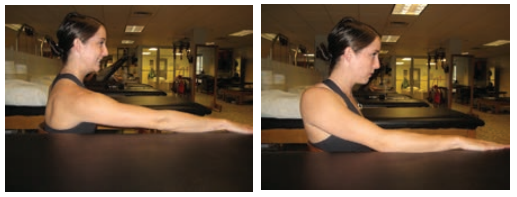
-
Start by lying down on the end of a table. Use a lighter dumbbell weight
to start and progress as needed. The first part of the exercise is working
on "scapular retraction"ù. While keeping your arm and elbow straight,
contract the muscles surrounding the shoulder blade in order for the
shoulder blade to slide towards the spine. Be sure not to "hike"ù your
shoulders during exercise. Repeat 2 x 15-20 times. For the second part
of the exercise, try holding the "scapular retraction"ù while doing a row.
Repeat 2 x 15-20 times. Switch side for balance.
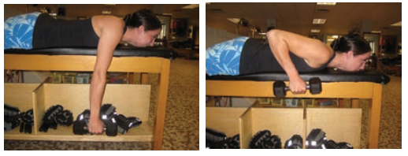
-
Start by lying face down on a table. Use a rolled up towel and place
it under forehead to help relax the neck muscles. The first exercise is
called "I's". Arms are placed at your side, and squeeze your shoulder
blades together. The second exercise is called "T's". Place your arms out
at your side to form a "T" with palms down then squeeze your shoulder
blades together. This exercise can also be done with thumbs pointing
upward. The third exercise is called "Y's". Place your arms above your
head to form a "Y" with palms facing down and squeeze shoulder
blades together. This exercise can also be done with thumbs pointing
upward. Each exercise can be done 2 x 15-20 times..
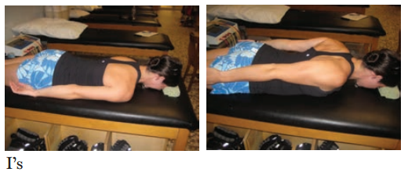
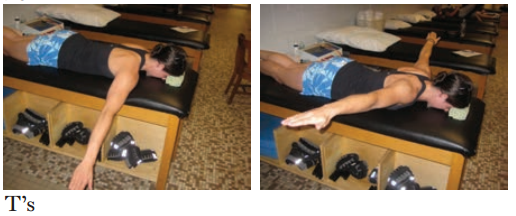
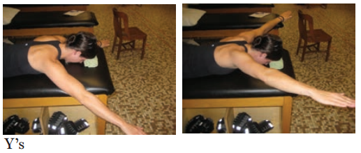
-
Lie on table facing up. Start with lighter dumbbell weights in each hand,
and progress as needed. Arms should be straight, shoulder width apart,
while holding the weights. Start with shoulder blades touching the table
then simultaneously punch up towards the ceiling so the shoulder
blades separate instead of squeezing together. At the end range of the
exercise, there should be space between the back of your shoulder and
the table. Exercise should end with shoulders touching the table again.
Repeat 2 x 15-20 times.
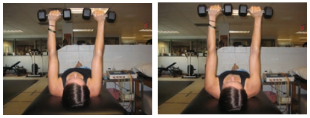
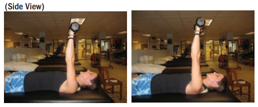
-
You will need a small piece of tubing for the following exercise.
Arms should be at your side with elbows bent at 90 degrees, and palms
facing up. Use the tubing for resistance as you squeeze your shoulder
blades together. Resistance should be felt within the scapular muscles.
Repeat 2 x 15-20 times.
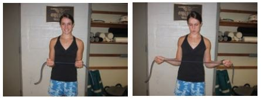
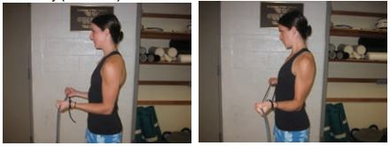
-
You will need a small piece of tubing for the following exercise.
Arms are straight, palms facing down and placed below the waist about
10 degrees away from the body. Use the tubing for resistance and
squeeze your shoulder blades together. Resistance should be felt within
scapular muscles. Repeat 2 x 15-20 times.
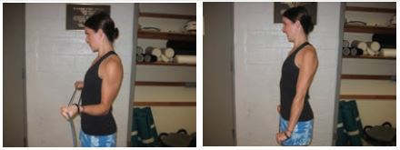
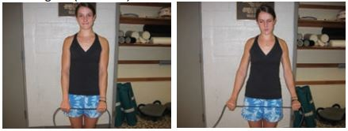
-
You will need a small piece of tubing for the following exercise.
Arms are straight, palms facing down and placed out in front of body at
shoulder level (90 degrees). Use the tubing for resistance and squeeze
your shoulder blades together. Resistance should be felt within scapular
muscles. Repeat 2 x 15-20 times.
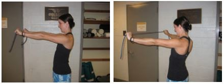
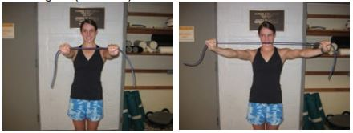
-
You will need a small piece of tubing for the following exercise.
Arms are straight, palms facing down and placed out in front of body
at eye level (120 degrees). Use the tubing for resistance and squeeze
your shoulder blades together. Resistance should be felt within scapular
muscles. Repeat 2 x 15-20 times.
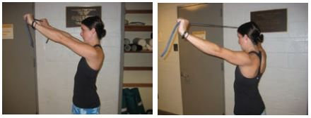
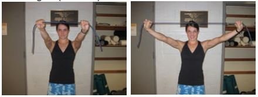
-
Arms are straight and in front of body at
shoulder level. Simultaneously, squeeze
shoulder blades together using the
resistance of the tubing/cable unit. Try to
keep arms straight during entire exercise
in order to isolate the scapular muscles.
Repeat 2 x 15-20 times.
(focus on retraction before pulling)
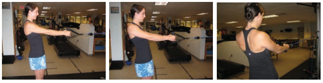
-
In a quadruped position (on all fours), place a dumbbell in one hand.
Start by making sure core is engaged and back is straight during entire
exercise. Lift the arm with dumbbell, out to side, making sure thumb is
pointing up towards ceiling. Lift to the level of your body and hold for 5
sec. Repeat 10-20 times. Switch side for balance.
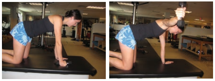
-
In a quadruped position (on all fours), place a dumbbell in one hand.
Start by making sure core in engaged and back is straight during entire
exercise. Lift the arm with dumbbell, out in front, making sure thumb is
pointing up towards ceiling. Lift to the level of your head and hold for 5
sec. Repeat 10-20 times. Switch side for balance.
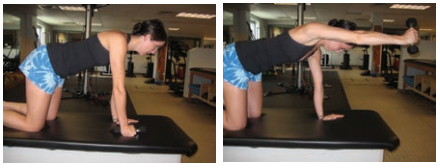
-
Kneeling on the side of a lower table or bench with dumbbell weight
in hand, lift the weight to body level making sure you are engaging the
scapular muscles before completing the row. Repeat 2 x 15-20 times.
Switch sides for balance.
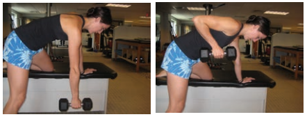
-
Lie facing down on an incline bench with two smaller dumbbell weights
in both hands. Simultaneously raise the weights by squeezing shoulder
blades together. Arms should end at body level. Repeat 2 x 10-15
times.
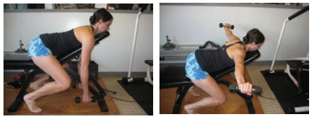
-
Begin in a push up position (either on knees or toes). Keep elbows
locked and head in line with spine. First pinch shoulder blades together
and then push up through your shoulders while rounding out your back.
Repeat 10-15 times.
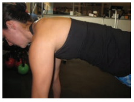
-
In a good plank position (this can be done on knees or toes depending
on ability), alternate right and left arm stepping onto box while
maintaining proper alignment during entire exercise. Repeat 2 x 5 - 10
repetitions each arm.
For more variety, start on one side of the box in a good plank position,
and step right arm followed by left arm onto the box, and move towards
the other side of the box. Work your way back to left, right and so on
Repeat 5 - 10 times.
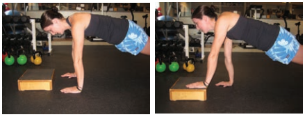
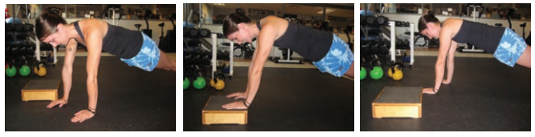
-
Hold a light dumbbell weight in right
hand and place in front of your body
keeping your elbow straight entire time.
Start by writing the alphabet (A-Z) in
capital letters. Rest. For the second
part, draw circles to the right and left 10
times each. This is important for scapular
stabilization (the muscles near the
shoulder blade are working to stabilize
with added movement). Repeat on left
side for balance.
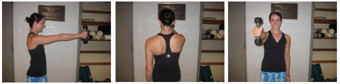